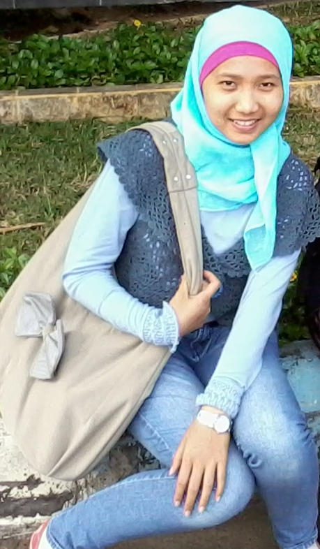

PROFILDewinta Nilan Sari |
|
|  |
Hai, perkenalkan namaku Dewinta Nilan Sari. Biasanya teman-teman memanggilku dengan nama Nilan. Menurut orangtua saya, arti dari nama Nilan adalah anak kedua perempuan yang lahir pada bulan Juni. Saya lahir di Sidoarjo, bertepatan pada tanggal 13 Juni 1993. Alamat rumah saya di Jalan Kalimosodo Gang Gumuk No.17 Asrama Dodikjur Malang. Untuk saat ini saya masih bertempat tinggal di rumah dinas Orangtua saya.
Sekarang saya sedang kuliah di Universitas Negeri Malang, dengan Program Studi S1 Pendidikan Teknik Elektro yang berada di bawah naungan Jurusan Teknik Elektro dan Fakultas Teknik. Kegiatan saya di Universitas Negeri Malang selain kuliah adalah mengikuti organisasi |